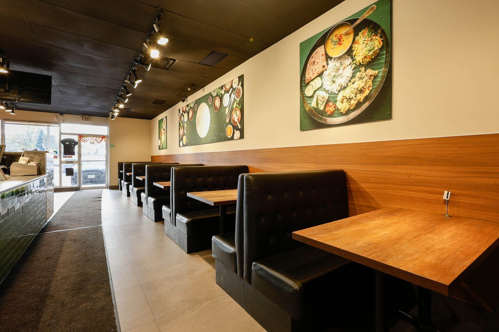
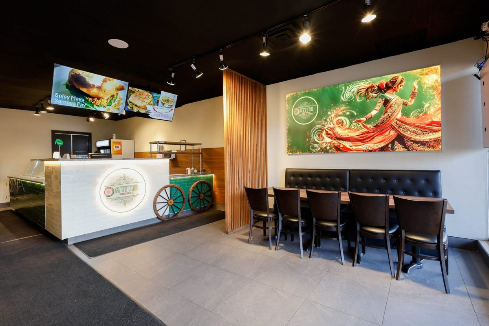
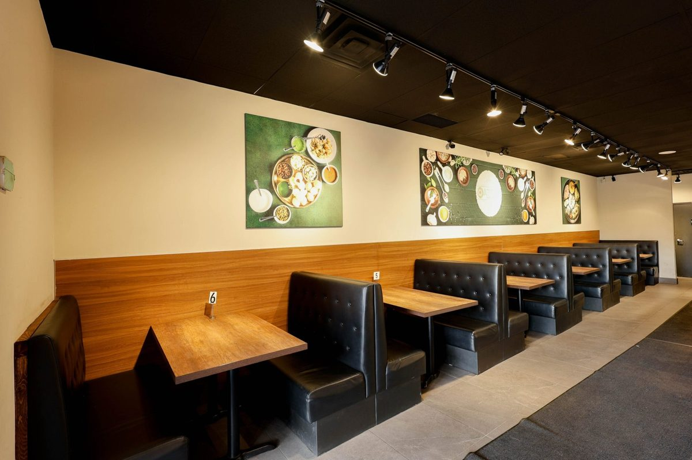
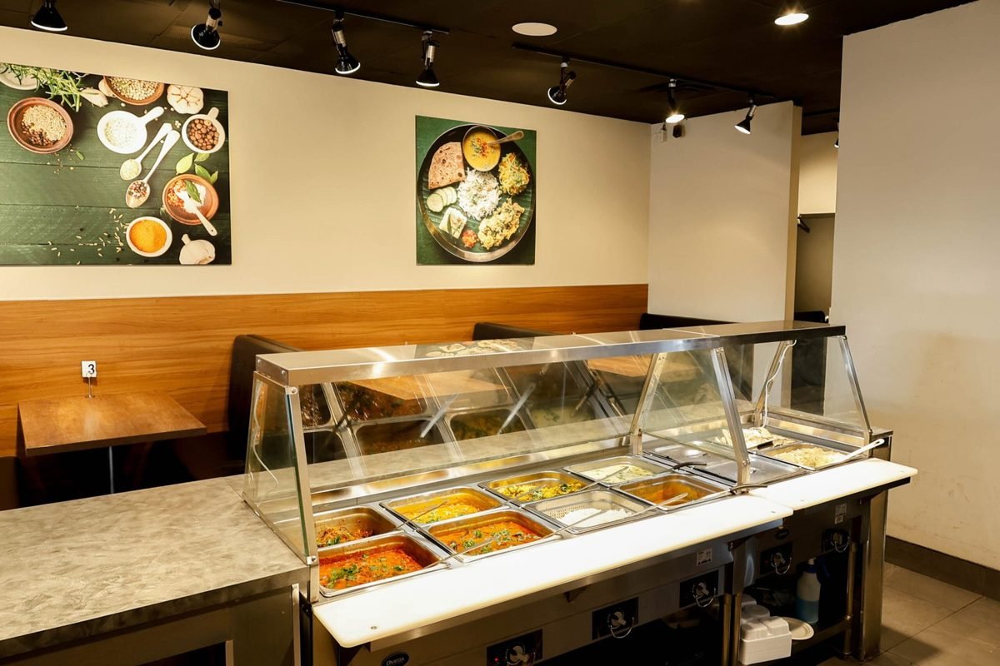

Restaurant construction / Scarborough, Ontario
Atithi
Warmth, from the first step inside.
A restaurant interior that brings seating, service and kitchen infrastructure together around a welcoming dining experience.
Completed under LifeBuild Canada. Shown here as prior project experience; the documented work follows.

View photographThe work
The thinking.
The making.
- Civil and structural modifications
- Interior detailing and furniture layout
- Kitchen infrastructure
- Feature walls and lighting
The work brought together structural modifications and interior details. Seating layout, feature walls, lighting and kitchen infrastructure were considered together, connecting the dining room to the practical work behind it.
Timber wall finishes, upholstered booths and a defined service counter give the completed interior a clear material rhythm. The photographs show how seating and service share the space.
Interior detailing · Seating layout · Kitchen coordination
A closer look
The space, in detail.


View photograph

View photograph

View photographThinking about a renovation or build? Tell us what you know so far. We can start with the questions you have.
Tell us about your projectPrefer email? Write to info@terranode.ca.